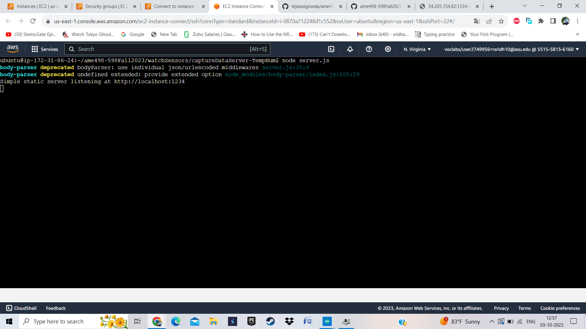

Temperature/Humidity
Tutorial
- Step 1 : Launch an EC2 instance in AWS as shown below. Give a name to the instance, select ubuntu 20.04 as the operating system and storage as 28 GB and launch the instance.
- Step 2 : Connect to the selected instance
- Step 3 : Run the following command in the terminal to install all the necessary libraries. (Nodejs, MongoDB)
$ curl -s https://gist.githubusercontent.com/tejaswigowda/f289e9bff13d152876e8d4b3281142f8/raw/df37df2e16a3166e686357a045751a7c18bbeebe/installNodeMongoUbuntu16.04.sh | bash
Step 4 : Check the nodejs version, if the version is 10.0 then run the following commands to update to verision 20.0
$ npm install -g n
$ n latest
Step 5 : Clone the gihub repository using the following command
$ git clone https://github.com/tejaswigowda/ame498-598Fall2023.git
Step 6 : Move into the directory : ~/ame498-598Fall2023/watchSensors/captureDataServer-TempHum by using the command "cd {folder_name}"
Step 7 : Before running the node server, the firewall must be configured. Go to the instances EC2, select Security in the tab below, select the launch wizard and edit inbound rules.
Step 8 : Add the inbound rules as shown below {your_ip_address}:{port}, you can check the IP address in the list of running instances in EC2.
Step 9 : Run the Node sever by running the following command shown below, if the PC is connected on ASU network it is recomended to run portmap to reroute the ports . If it is a home internet it is fine to use the same port. I have used the port 1234.
$ chmod +x portmap.sh
$ ./portmap.sh
$ Node server.js

Step 6 : Connect the DH11 sesnor, modify the ssid, password and IP address to the address of the AWS server. Finally upload the code to TTGO-T watch
Final Result